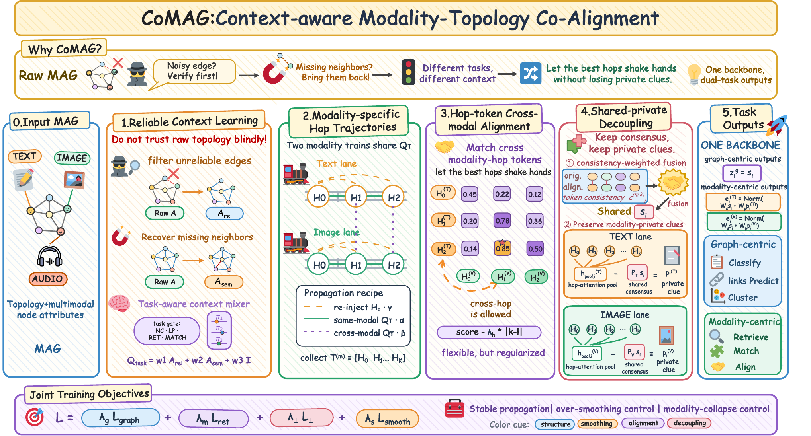
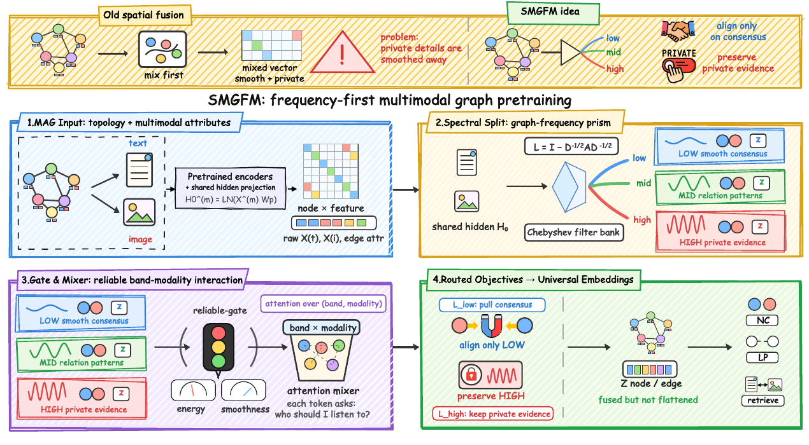
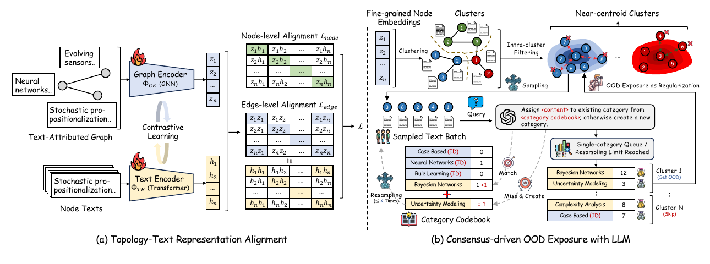
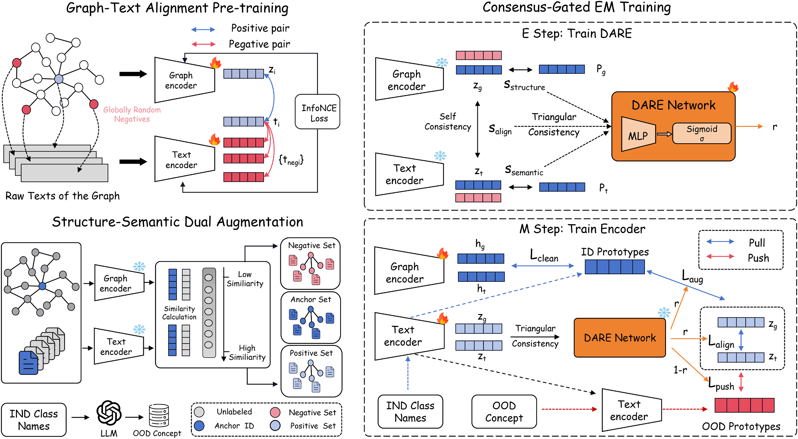

2026.08 IEEE ICDM 2026 — Two papers accepted.2026.05 ACM KDD 2026 — One paper accepted.2026.03 Knowledge-Based Systems — TTCM accepted.
About
I am an undergraduate student at Shandong University studying computer science. My current research interests include multimodal graph learning, graph foundation models, multi-agent systems, and agentic AI.
I am exploring how graph structure can support multimodal representation learning and coordinated reasoning among multiple agents, with ongoing work on agentic graph intelligence.
Research
Current interests
Multimodal graph learning
Graph foundation models
Multi-agent systems (MAS)
Agentic AI
Publications
Selected work

IEEE ICDM 2026 · CCF-B 2026.08 Accepted · Second author
CoMAG: Context-aware Modality-Topology Co-Alignment for Multimodal Attributed Graphs
Sirui Zhang, Xu Wang , Zhengyu Wu, Xunkai Li, Hongchao Qin
Contributed to core module design and the concept and illustration of the method framework.

IEEE ICDM 2026 · CCF-B 2026.08 Accepted · Second author
SMGFM: Spectral Multimodal Graph Pretraining for Multimodal-Attributed Graphs
Zhengyu Wu, Xu Wang , Hongchao Qin, Xunkai Li, Guang Zeng, Rong-Hua Li, Guoren Wang
Contributed to core module design and the concept and illustration of the method framework.

ACM KDD 2026 · CCF-A 2026.05 Third author
Both Topology and Text Matter: Revisiting LLM-guided Out-of-Distribution Detection on Text-attributed Graphs
Yinlin Zhu, Di Wu, Xu Wang , Guocong Quan, Miao Hu
Topology-text representation alignment and consensus-driven OOD exposure with LLM guidance.

Knowledge-Based Systems 2026.03 First author
Towards Effective Few-Shot OOD Detection for Text-Attributed Graphs via Topology-Text Consensus Modeling
Xu Wang , Yinlin Zhu, Xunkai Li, Meixia Qu, Wenyu Wang
Topology-text consensus modeling for few-shot OOD detection on text-attributed graphs.